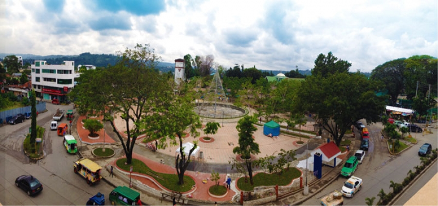

Gaston Park
Gaston Park is one of the most visited places here in Cagayan de Oro. It was named after a pre-war Municipal Mayor of Cagayan de Oro, Segundo Gaston, the park is located near the St. Augustine Cathedral and the Archbishop’s Palace. Gaston Park was the main plaza of Cagayan de Misamis during the Spanish colonial period. It served as the training ground of local patriots during the Philippine-American War. Later it became the site of the Battle of Cagayan de Misamis on April 7, 1900. A National Historical Institute marker was placed in the park in 2000.